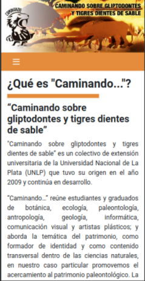

A pedido · DesarrolloPublicado
Sitio web «Caminando sobre gliptodontes y tigres dientes de sable»
Sitio de un proyecto de extensión de la UNLP que organiza talleres multisensoriales sobre paleontología y patrimonio. Participé en el análisis de requerimientos, desarrollo y mantenimiento.
Qué demuestra: participación en el ciclo de vida de un producto web y atención a la accesibilidad.
